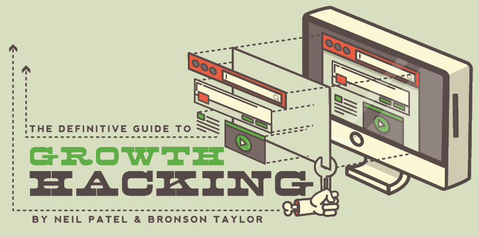
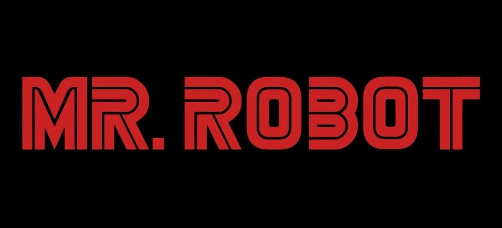

Hello World
CodeTengu Weekly 碼天狗週刊
本期 curators：
- @vinta - I failed the Turing Test - Web Developer / DevOps
- @saiday - Imnotyourson - iOS / Android Developer
- @tzangms - Oceanic / 人生海海 - 身體裡留著衝動購物血液的男人
 @vinta
@vinta
qyuhen/book - C、Go、Python 学习笔记
由中國的程序員「雨痕」所發表的程式語言學習筆記，有 C、Go、Python 三個 PDF 檔案。雖然名為筆記，但是內容的質量非常高，完全有程式語言書籍的水準（其實寫得比很多實際出版的書都還要好）。而且我當初學 Golang 就是看他的學習筆記入門的。
延伸閱讀：
- Python 高级编程（影片，講者是豆瓣的工程師 @dongweiming）
High Performance Django
市面上真的沒有幾本好的 Django 的書，可能也是因為 Django 的官方文件就已經相當完善了。我讀過的寫得算不錯的書，除了 Two Scoops of Django: Best Practices for Django 之外，就是這本 High Performance Django 了。
這本書的字數其實不多，但是涵蓋的主題很廣，從 CDN、load balancer、web accelerator（例如 Varnish）、WSGI servers、asynchronous tasks、caches、templates 到 databases，在每個章節裡，作者都會給出很多關鍵字，讓你知道可以用什麼方法、工具或服務去解決某個組件的 performance 問題。
MySQL 数据库开发的三十六条军规
時任赶集网的首席 DBA 石展在 QCon 2013 年的演講影片，懶得看影片（或是聽不懂講者的口音）的人可以直接看延伸閱讀的台灣工程師整理的文字版。
延伸閱讀：
hashicorp/consul - Service Discovery
Consul 是由 HashiCorp（就是開發 Vagrant 的那家公司）開源的一款 service discovery 工具（包含 health checking 和 key/value storage 的功能），搭配 consul-template 使用的話，可以做到一有新的機器起來或是有機器掛掉，就自動更新 HAProxy 的 config 這一類的事情，實在帥氣。
延伸閱讀：
台灣工程師常唸錯的英文單字
這篇文章非常實用而且駭人聽聞，看完才知道 null 不唸「怒偶」而 cache 其實跟 cash 同音，我他媽都嚇死了。還有一些作者沒講到的，但是大家也常常亂唸的有 JSON（其實是唸成 Jason）和 YAML，這已經不是腔調的問題了，而是我們根本就唸錯了啊。
延伸閱讀：
 @saiday
@saiday
Architecting Android… The evolution
作者概略介紹了先進的 Android 架構應該怎麼設計。
利用 RxJava 實作 FRP、透過 Dagger 2 設計 Dependency Injection、介紹了 Retrolambda 使用心得、Gradle 設定等等。
Swift 2 + Xcode 7: Unit Testing Access Made Easy!!!!
Swift 2 新加入的 @testable 真的太棒了，終於想要在 Swift 寫 Tests 了！
PS. 要在 build settings 裡將 Enable Testability option 設成 YES，default 是 NO。
 @tzangms
@tzangms

The Definitive Guide to Growth Hacking
這一陣子 Growth Hacking 這個名詞越來越熱門，這篇是我最近找到比較完整的介紹，一共十個章節，從 Growth Hacking 這個名詞的起源開始、怎樣的人適合當 Growth Hacker、如何留住使用者、相關工具等，都有詳盡的介紹。
Random Cool Stuff

Mr. Robot
美劇，主角是一個有社交障礙的中二陰鬱程序員，被心儀的女同事邀請去參加派對，到了門口卻遲遲不敢進去（有沒有很有代入感？！）。然後就突然被一個企圖顛覆整個資本主義社會的駭客組織招募了。雖然主角是個碼農（fuck yeah），但是整部戲充滿抑鬱和冷冽的風格，好看到讓人起雞皮疙瘩。
由 @vinta 分享